<title>NomadRight User Guide</title>
<link rel="stylesheet" href="https://fonts.googleapis.com/css2?family=IBM+Plex+Sans:wght@400;600&family=IBM+Plex+Sans+Condensed:wght@500;600&family=IBM+Plex+Mono:wght@400;500&family=Noto+Sans+Devanagari:wght@400;600&family=Noto+Sans+Tamil:wght@400;600&display=swap">
<style>
:root{--ground:#F4F5F2;--surface:#FFFFFF;--ink:#16232B;--muted:#5B6B74;--accent:#2F3E9E;--pass:#2E7D4F;--warn:#A8691C;--fail:#B0413E;--rule:#D8DDD9;--tint:#E9ECF7;--code:#EEF0EC;}
@media (prefers-color-scheme:dark){:root:not([data-theme="light"]){--ground:#12191E;--surface:#1A242B;--ink:#E6EBEA;--muted:#9AA7AE;--accent:#8FA0FF;--pass:#6FCF97;--warn:#E0A84A;--fail:#F07A76;--rule:#2C3841;--tint:#1F2A45;--code:#141C22;}}
:root[data-theme="dark"]{--ground:#12191E;--surface:#1A242B;--ink:#E6EBEA;--muted:#9AA7AE;--accent:#8FA0FF;--pass:#6FCF97;--warn:#E0A84A;--fail:#F07A76;--rule:#2C3841;--tint:#1F2A45;--code:#141C22;}
*{box-sizing:border-box}
body{background:var(--ground);color:var(--ink);font-family:"IBM Plex Sans",system-ui,-apple-system,"Segoe UI",sans-serif;font-size:15.5px;line-height:1.55;margin:0;padding-block:32px 64px;padding-inline:clamp(16px,4vw,40px)}
main{max-width:82ch;margin:0 auto}
h1,h2,h3{font-family:"IBM Plex Sans Condensed","IBM Plex Sans",system-ui,sans-serif;font-weight:600;line-height:1.15;text-wrap:balance;margin:0}
h1{font-size:2.1rem;letter-spacing:-.01em}
h2{font-size:1.35rem;margin-top:2.6rem;padding-top:1.2rem;border-top:1px solid var(--rule)}
h3{font-size:1.05rem;margin-top:1.5rem}
p{margin:.7rem 0;max-width:70ch}
.eyebrow{font-family:"IBM Plex Sans Condensed",sans-serif;font-weight:500;text-transform:uppercase;letter-spacing:.08em;font-size:.78rem;color:var(--muted)}
.lede{color:var(--muted);font-size:1.02rem;margin-top:.5rem}
code,pre,td.n,th.n,.mono{font-family:"IBM Plex Mono",ui-monospace,SFMono-Regular,Menlo,monospace;font-variant-numeric:tabular-nums}
code{font-size:.88em;background:var(--code);padding:.05em .35em;border-radius:3px}
pre{background:var(--code);padding:.8rem 1rem;border-radius:4px;overflow-x:auto;font-size:.84rem;line-height:1.5;margin:.6rem 0}
pre code{background:none;padding:0;font-size:inherit}
.map{display:grid;grid-template-columns:repeat(auto-fit,minmax(14rem,1fr));gap:.6rem;margin:1.4rem 0 0;align-items:start}
.map div{background:var(--surface);border:1px solid var(--rule);border-radius:4px;padding:.7rem .85rem;font-size:.9rem}
.map b{display:block;font-family:"IBM Plex Sans Condensed",sans-serif;font-size:1rem;margin-bottom:.25rem}
.map code{font-size:.82em}
ol.steps{list-style:none;padding:0;margin:.8rem 0;counter-reset:step}
ol.steps li{counter-increment:step;display:grid;grid-template-columns:2.2rem 1fr;gap:.6rem;padding:.6rem 0;border-top:1px solid var(--rule);align-items:start}
ol.steps li:first-child{border-top:0}
ol.steps li::before{content:counter(step);font-family:"IBM Plex Sans Condensed",sans-serif;font-weight:600;font-size:1.1rem;color:var(--accent);line-height:1.4}
ol.steps li p{margin:.25rem 0}
ol.steps li pre{margin:.4rem 0}
.tbl{overflow-x:auto;margin:.9rem 0;border:1px solid var(--rule);border-radius:4px;background:var(--surface)}
table{border-collapse:collapse;width:100%;font-size:.86rem}th,td{padding:.45rem .65rem;border-top:1px solid var(--rule);text-align:left;vertical-align:top}
thead th{border-top:0;background:var(--tint);font-family:"IBM Plex Sans Condensed",sans-serif;font-weight:600;font-size:.8rem;letter-spacing:.03em;white-space:nowrap}
td.n,th.n{text-align:right;white-space:nowrap}
td code{white-space:nowrap}
.note{border-left:3px solid var(--accent);padding:.5rem .9rem;margin:1rem 0;background:var(--surface);border-radius:0 4px 4px 0}
.note.warn{border-left-color:var(--warn)}.note.fail{border-left-color:var(--fail)}.note.pass{border-left-color:var(--pass)}
.chip{display:inline-block;font-family:"IBM Plex Sans Condensed",sans-serif;font-weight:600;font-size:.74rem;letter-spacing:.06em;text-transform:uppercase;padding:.12em .5em;border-radius:3px;border:1px solid currentColor;margin-left:.4rem;vertical-align:middle}
.chip.pass{color:var(--pass)}.chip.warn{color:var(--warn)}.chip.ask{color:var(--accent)}
ul,ol.plain{padding-left:1.2rem;margin:.5rem 0}li{margin:.25rem 0}
dl{display:grid;grid-template-columns:max-content 1fr;gap:.35rem 1rem;margin:.6rem 0}dt{font-weight:600}dd{margin:0}
.say{display:grid;grid-template-columns:repeat(auto-fit,minmax(11rem,1fr));gap:.5rem;margin:.8rem 0}
.say div{background:var(--surface);border:1px solid var(--rule);border-radius:4px;padding:.5rem .7rem;font-size:.88rem}
.say b{display:block;font-family:"IBM Plex Sans Condensed",sans-serif}
footer{margin-top:3rem;color:var(--muted);font-size:.85rem;border-top:1px solid var(--rule);padding-top:1rem}
a{color:var(--accent)}
@media (max-width:480px){h1{font-size:1.7rem}dl{grid-template-columns:1fr}ol.steps li{grid-template-columns:1.6rem 1fr}}
@media (prefers-reduced-motion:reduce){*{animation:none!important;transition:none!important}}
</style>
<style>
/* User guide additions: screenshots, on-screen labels, Hindi/Tamil text, quick cards */
figure{margin:1rem 0 1.3rem}
figure img{display:block;max-width:100%;height:auto;border:1px solid var(--rule);border-radius:4px;background:var(--surface)}
figcaption{color:var(--muted);font-size:.85rem;margin-top:.35rem;max-width:70ch}
.pair{display:grid;grid-template-columns:repeat(auto-fit,minmax(15rem,1fr));gap:.9rem;margin:1rem 0 1.3rem}
.pair figure{margin:0}
.ui{font-weight:600;background:var(--tint);padding:0 .3em;border-radius:3px}
:lang(hi){font-family:"Noto Sans Devanagari","IBM Plex Sans",system-ui,sans-serif}
:lang(ta){font-family:"Noto Sans Tamil","IBM Plex Sans",system-ui,sans-serif}
.card{background:var(--surface);border:1px solid var(--rule);border-radius:6px;padding:1rem 1.1rem;margin:1.4rem 0}
.card h3{margin-top:0;font-size:1.2rem}
.card ol.steps li{font-size:1.02rem}
.thumbs{display:grid;grid-template-columns:repeat(auto-fit,minmax(9rem,1fr));gap:.7rem;margin:.9rem 0 0}
.thumbs figure{margin:0}
.thumbs figcaption{font-size:.8rem}
@media print{.card,figure,.tbl{break-inside:avoid}}
</style>
<main>
<header>
<div class="eyebrow">NomadRight kiosk · for the people who use it · as installed on 14 September 2026</div>
<h1>NomadRight User Guide</h1>
<p class="lede">How to ask about government schemes by voice, read about the schemes, and fill a government form by answering its questions aloud, in Tamil, Hindi or English. A short card in Hindi and one in Tamil are at the end.</p>
</header>

<div class="map">
<div><b>Ask by voice</b>Menu → <span class="ui">Speak Your Question</span>. Tap the blue microphone, ask in your own words, then press <span class="ui">Stop &amp; Process</span>. <a href="#s4">Section 4</a>.</div>
<div><b>Read about schemes</b>Menu → <span class="ui">View All Schemes</span>. What each scheme gives, the documents needed and helpline numbers. <a href="#s7">Section 7</a>.</div>
<div><b>Fill a form</b>Menu → <span class="ui">Scan a Document</span>. Show the printed form to the camera and answer the questions aloud. <a href="#s8">Section 8</a>.</div>
</div>

<h2 id="s1">1 · What the kiosk is for</h2>
<p>NomadRight helps workers who have come from another state to find government schemes and their rights. You can ask a question by voice, read about the schemes, or fill a government form by answering its questions aloud.</p>
<p>It works without internet. It talks, and shows its words, in Tamil, Hindi or English.</p>
<h3>What the kiosk forgets, and what it keeps</h3>
<ul>
<li><strong>When you press Home, the kiosk forgets your visit.</strong> Your question and the answer leave the screen. The recording of the answer is deleted, so <span class="ui">Listen again</span> is gone. The kiosk forgets which scheme you were talking about, and a form you were filling ends. The next person starts fresh.</li>
<li><strong>Form answers go to the office.</strong> Each answer is locked and sent to the office computer for the officer as soon as you give it. If the office computer cannot be reached, the locked copy waits on the kiosk until it can be sent. The kiosk itself cannot open it.</li>
<li><strong>The kiosk keeps a written list of the questions people ask.</strong> It is never shown to the next person, but it stays on the kiosk. So do not say your name or any personal number when you ask a question. Personal details are only needed when you fill a form.</li>
</ul>

<h2 id="s2">2 · Starting</h2>
<p>If the screen shows <span class="ui">All systems ready to go!</span>, the kiosk has just been switched on. Press <span class="ui">Continue</span>.</p>
<p>The first screen is the <strong>language page</strong>. It says <span class="ui">Please select your language</span> and has three big buttons: <span class="ui" lang="ta">தமிழ்</span> Tamil, <span class="ui" lang="hi">हिन्दी</span> Hindi and <span class="ui">English</span>.</p>
<ol class="steps">
<li><div><p><strong>Touch your language.</strong></p></div></li>
<li><div><p><strong>Everything after that is in your language:</strong> the words on the screen, the language the kiosk listens for, and the voice that answers. Speak in the language you chose.</p></div></li>
<li><div><p><strong>Only this page changes the language.</strong> To change it later, press Home and choose again. Home also ends your visit.</p></div></li>
</ol>
<figure>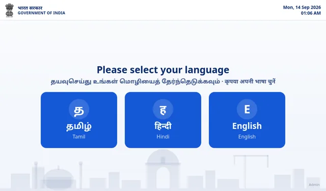<figcaption>The language page. Touch Tamil, Hindi or English. The small “Admin” text in the bottom corner is for staff only.</figcaption></figure>

<h2 id="s3">3 · The menu</h2>
<p>After you choose a language, the menu asks <span class="ui">How can we help you today?</span> and shows four big buttons.</p>
<div class="tbl"><table><thead><tr><th>English</th><th>हिन्दी</th><th>தமிழ்</th><th>What it is for</th></tr></thead><tbody>
<tr><td><span class="ui">Speak Your Question</span></td><td lang="hi">अपना सवाल बोलिए</td><td lang="ta">உங்கள் கேள்வியைச் சொல்லுங்கள்</td><td>Ask about schemes by voice. <a href="#s4">Section 4</a>.</td></tr>
<tr><td><span class="ui">Scan a Document</span></td><td lang="hi">दस्तावेज़ स्कैन करें</td><td lang="ta">ஆவணத்தை ஸ்கேன் செய்யவும்</td><td>Fill a printed government form by voice. <a href="#s8">Section 8</a>.</td></tr>
<tr><td><span class="ui">View All Schemes</span></td><td lang="hi">सभी योजनाएँ देखें</td><td lang="ta">அனைத்து திட்டங்களையும் பார்க்கவும்</td><td>Read about every scheme. <a href="#s7">Section 7</a>.</td></tr>
<tr><td><span class="ui">Help</span></td><td lang="hi">मदद</td><td lang="ta">உதவி</td><td>Eight pictures that show how to use the kiosk. <a href="#s10">Section 10</a>.</td></tr>
<tr><td><span class="ui">Back</span></td><td lang="hi">पीछे</td><td lang="ta">பின்</td><td>Bottom left. Goes back to the language page and ends your visit, like Home.</td></tr>
<tr><td><span class="ui">Home</span></td><td lang="hi">होम</td><td lang="ta">முகப்பு</td><td>Top right of every page after the language page. <a href="#s9">Section 9</a>.</td></tr>
</tbody></table></div>
<p>The question page, the scan page and the schemes page have no Back button. To go from one of them to another, press Home and choose your language again. This starts a new visit.</p>
<figure>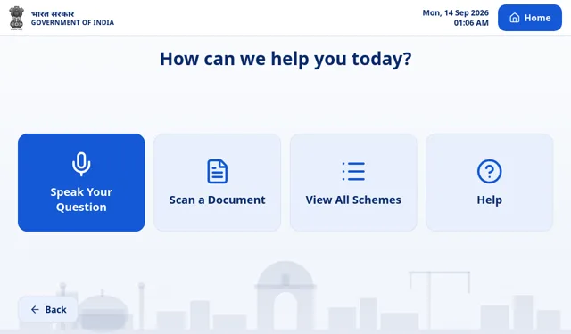<figcaption>The menu, with Back at the bottom left and Home at the top right.</figcaption></figure>

<h2 id="s4">4 · Asking a question by voice</h2>
<ol class="steps">
<li><div><p><strong>Open the question page.</strong> On the menu, touch <span class="ui">Speak Your Question</span>. You see a big blue microphone that says <span class="ui">Tap to speak</span>.</p></div></li>
<li><div><p><strong>Tap the blue microphone.</strong> The page shows a red dot, <span class="ui">Listening...</span> and a clock counting the seconds. Now ask your question.</p></div></li>
<li><div><p><strong>When you have finished, press the red <span class="ui">Stop &amp; Process</span> button.</strong> Tapping the big blue microphone again does the same. <span class="ui">Cancel</span> stops listening without giving an answer.</p></div></li>
<li><div><p><strong>Wait while the kiosk works it out.</strong> A box shows two steps, <span class="ui">Understanding Your Question</span> and then <span class="ui">Finding Your Answer</span>. This can take several seconds. <span class="ui">Cancel Processing</span> stops it.</p></div></li>
<li><div><p><strong>Listen to the answer.</strong> The kiosk says the answer aloud. The page shows <span class="ui">Speaking Answer</span>, your question after <span class="ui">Your question:</span>, and the answer in large letters.</p></div></li>
<li><div><p><strong>Then choose what to do next:</strong> <span class="ui">Listen again</span> to hear the same answer once more, <span class="ui">Ask your questions</span> to ask your next question, or <span class="ui">Home</span> when you are done.</p></div></li>
</ol>
<div class="pair">
<figure><figcaption>Listening. Speak, then press <span class="ui">Stop &amp; Process</span>.</figcaption></figure>
<figure>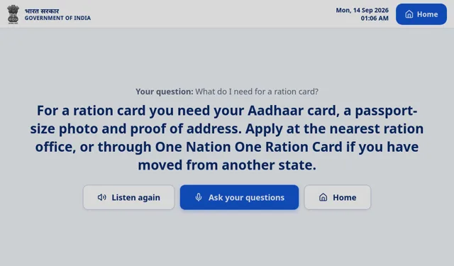<figcaption>An answer, with <span class="ui">Listen again</span>, <span class="ui">Ask your questions</span> and <span class="ui">Home</span>.</figcaption></figure>
</div>
<p><strong>How long you can speak:</strong> up to 15 seconds for one question. The clock keeps counting after that, but the kiosk only uses the first 15 seconds. Short questions work best.</p>

<h3>The buttons on the question page</h3>
<div class="tbl"><table><thead><tr><th>English</th><th>हिन्दी</th><th>தமிழ்</th><th>When you see it</th><th>What it does</th></tr></thead><tbody>
<tr><td><span class="ui">Tap to speak</span></td><td lang="hi">बोलने के लिए दबाएँ</td><td lang="ta">பேச தட்டவும்</td><td>Before your first question</td><td>Starts listening.</td></tr>
<tr><td><span class="ui">Stop &amp; Process</span></td><td lang="hi">रोकें और प्रोसेस करें</td><td lang="ta">நிறுத்தி செயலாக்கு</td><td>While listening</td><td>You have finished speaking. The kiosk looks for the answer.</td></tr>
<tr><td><span class="ui">Cancel</span></td><td lang="hi">रद्द करें</td><td lang="ta">ரத்துசெய்</td><td>While listening</td><td>Stops listening. No answer is given.</td></tr>
<tr><td><span class="ui">Cancel Processing</span></td><td lang="hi">प्रोसेसिंग रद्द करें</td><td lang="ta">செயலாக்கத்தை ரத்துசெய்</td><td>While it looks for the answer</td><td>Stops. Nothing is said.</td></tr>
<tr><td><span class="ui">Stop Speaking</span></td><td lang="hi">बोलना रोकें</td><td lang="ta">பேசுவதை நிறுத்து</td><td>While the answer is being spoken</td><td>Stops the voice at once.</td></tr>
<tr><td><span class="ui">Listen again</span></td><td lang="hi">फिर से सुनें</td><td lang="ta">மீண்டும் கேட்க</td><td>Only after an answer has been spoken to the end</td><td>Plays the same answer again.</td></tr>
<tr><td><span class="ui">Ask your questions</span></td><td lang="hi">अपना सवाल पूछिए</td><td lang="ta">உங்கள் கேள்விகளைக் கேளுங்கள்</td><td>While an answer is spoken, and after it</td><td>Listens for your next question straight away. If the kiosk is still talking, it stops. Press <span class="ui">Stop &amp; Process</span> when you finish.</td></tr>
<tr><td><span class="ui">Home</span></td><td lang="hi">होम</td><td lang="ta">முகப்பு</td><td>Top right, and under an answer</td><td>Ends your visit. <a href="#s9">Section 9</a>.</td></tr>
</tbody></table></div>
<div class="note warn"><strong><span class="ui">Cancel</span>, <span class="ui">Cancel Processing</span> and <span class="ui">Stop Speaking</span> also clear the page.</strong> Like Home, they take the answer off the screen and make the kiosk forget the conversation, but you stay on the question page. In your next question, say the scheme name again.</div>
<p><strong><span class="ui">Listen again</span></strong> is only there when the last answer was spoken to the end. It is hidden while a new question is being answered, and it is gone after you stop an answer or press Home. If the kiosk could not hear a new question, your last complete answer comes back, with its <span class="ui">Listen again</span> button.</p>

<h2 id="s5">5 · How to speak</h2>
<ul>
<li><strong>Speak naturally, in your own words.</strong> Talk the way you would talk to a person at a help desk. There are no special words to learn, and you do not need a special voice.</li>
<li><strong>Ask one question at a time.</strong> Listen to the answer, then ask the next one.</li>
<li><strong>Stand close to the kiosk</strong> and speak towards it in your normal voice. If it is noisy around you, wait for a quieter moment if you can.</li>
<li><strong>Start after <span class="ui">Listening...</span> appears</strong>, and press <span class="ui">Stop &amp; Process</span> after your last word.</li>
<li>The listening page says <span class="ui">Speak clearly into the microphone</span>. That only means: face the kiosk and talk normally.</li>
<li><strong>Say scheme names the way people usually say them.</strong> Short names are fine: “ration card”, “Ayushman card”, “PM Kisan”, “e-Shram”, “labour card”. In Hindi or Tamil, use these names inside your sentence just as you say them every day, for example <span lang="hi">“आयुष्मान कार्ड के लिए कौन से दस्तावेज़ चाहिए?”</span> or <span lang="ta">“எனக்கு ரேஷன் அட்டை எப்படி கிடைக்கும்?”</span></li>
<li><strong>If the kiosk did not understand you, it says so, and you can simply ask again.</strong></li>
</ul>
<div class="say">
<div><b>It heard nothing it could use</b>A red box says <span class="ui">Could not hear you. Please try again.</span> It closes by itself after a moment. Tap the microphone and ask again.</div>
<div><b>It heard you but has no answer</b>It says: <q>I am sorry, I do not have information about that. Please ask me about a government scheme, for example the ration card, Ayushman Bharat, e-Shram or PM-Kisan.</q> Ask in other words, or say the scheme’s name.</div>
<div><b>Your question was too short</b>It asks you back, for example: <q>Which card do you mean: ration card, Ayushman card, e-Shram card, job card, or labour card?</q> Ask again and name the one you mean.</div>
</div>

<h2 id="s6">6 · What you can ask</h2>
<ul>
<li><strong>About a scheme, by name:</strong> what it gives, who can get it, which documents you need, how to apply, and whom to contact, such as a helpline number.</li>
<li><strong>About your situation:</strong> say your age, your work, where you come from and where you live now, and ask which scheme is for you. The kiosk may ask you something back, for example <q>What work do you do?</q> or <q>How old are you?</q> Just answer it.</li>
<li><strong>Follow-up questions:</strong> after an answer about a scheme you can ask <q>Is it free?</q> or <q>What documents do I need?</q> without saying the name again. The kiosk remembers the scheme until you press Home, <span class="ui">Cancel</span>, <span class="ui">Cancel Processing</span> or <span class="ui">Stop Speaking</span>.</li>
<li><strong>Greetings, and questions about the kiosk:</strong> <q>Hello</q>, <q>Thank you</q>, <q>Who are you?</q>, <q>What can you do?</q>, <q>How do I use this?</q>, <q>Can I speak in Tamil?</q>, <q>Can you help me fill a form?</q></li>
</ul>
<p>It does not answer other things, such as the weather, the news or songs. For those it says it has no information.</p>

<h3>Example questions that were tried on the kiosk</h3>
<div class="tbl"><table><thead><tr><th>English: say it like this</th></tr></thead><tbody>
<tr><td>Can I use my ration card in Tamil Nadu?</td></tr>
<tr><td>What documents are required for the Ayushman card?</td></tr>
<tr><td>How do I register on e-shram?</td></tr>
<tr><td>How much money does PM Kisan give?</td></tr>
<tr><td>I am 45, drive an auto in Mumbai, earn 12000 a month and have no pension. Which scheme?</td></tr>
<tr><td>I am a 62 year old widow from Bihar living in Chennai with no income. What can I get?</td></tr>
<tr><td>My wife is in Bihar and I am in Chennai. Can she take our ration there while I take mine here?</td></tr>
<tr><td>Is it free? <span style="color:var(--muted)">(asked right after a question about the Ayushman card)</span></td></tr>
</tbody></table></div>
<div class="tbl"><table><thead><tr><th>हिन्दी: ऐसे पूछिए</th><th>Meaning</th></tr></thead><tbody>
<tr><td lang="hi">मुझे राशन कार्ड कैसे मिलेगा?</td><td>How do I get a ration card?</td></tr>
<tr><td lang="hi">क्या मेरा राशन कार्ड तमिलनाडु में चलेगा?</td><td>Will my ration card work in Tamil Nadu?</td></tr>
<tr><td lang="hi">आयुष्मान कार्ड के लिए कौन से दस्तावेज़ चाहिए?</td><td>Which documents are needed for the Ayushman card?</td></tr>
<tr><td lang="hi">पीएम किसान योजना के बारे में बताओ।</td><td>Tell me about the PM Kisan scheme.</td></tr>
<tr><td lang="hi">अस्पताल में मुफ्त इलाज मिलेगा क्या?</td><td>Will I get free treatment in hospital?</td></tr>
<tr><td lang="hi">ठेकेदार ने मजदूरी नहीं दी।</td><td>The contractor did not pay my wages.</td></tr>
<tr><td lang="hi">मैं बिहार से आया मजदूर हूँ।</td><td>I am a worker who came from Bihar.</td></tr>
<tr><td lang="hi">नमस्ते</td><td>Hello</td></tr>
</tbody></table></div>
<div class="tbl"><table><thead><tr><th>தமிழ்: இப்படிக் கேளுங்கள்</th><th>Meaning</th></tr></thead><tbody>
<tr><td lang="ta">எனக்கு ரேஷன் அட்டை எப்படி கிடைக்கும்?</td><td>How do I get a ration card?</td></tr>
<tr><td lang="ta">ஆயுஷ்மான் அட்டைக்கு என்ன ஆவணங்கள் தேவை?</td><td>Which documents are needed for the Ayushman card?</td></tr>
<tr><td lang="ta">மருத்துவமனையில் சிகிச்சை கிடைக்குமா?</td><td>Can I get treatment in hospital?</td></tr>
<tr><td lang="ta">எனக்கு வயது அறுபது, ஓய்வூதியம் கிடைக்குமா?</td><td>I am sixty. Can I get a pension?</td></tr>
<tr><td lang="ta">ஒப்பந்தக்காரர் சம்பளம் கொடுக்கவில்லை.</td><td>The contractor did not pay my wages.</td></tr>
<tr><td lang="ta">நான் பீகாரில் இருந்து வந்த கட்டிட தொழிலாளி.</td><td>I am a construction worker from Bihar.</td></tr>
<tr><td lang="ta">தொழிலாளர் அட்டை எங்கே பெறுவது?</td><td>Where do I get a labour card?</td></tr>
<tr><td lang="ta">வணக்கம்</td><td>Hello</td></tr>
</tbody></table></div>
<p>The full list of questions the kiosk knows is in a separate document, <em>NomadRight General Questions</em>.</p>

<h2 id="s7">7 · Viewing all schemes</h2>
<ol class="steps">
<li><div><p><strong>Open the list.</strong> On the menu, touch <span class="ui">View All Schemes</span>. The page <span class="ui">Government Schemes</span> says how many schemes the kiosk can help with: 34.</p></div></li>
<li><div><p><strong>Pick a group, if you like.</strong> The row of buttons at the top shows groups such as Agriculture, Health, or Pension &amp; Social Security. <span class="ui">All</span> shows every scheme.</p></div></li>
<li><div><p><strong>Look through the cards.</strong> Schemes are shown three at a time. Each card shows its group, the scheme’s name, a short description and <span class="ui">Details ›</span>. Use the arrow buttons on the left and right, or swipe, to see more. The dots underneath show where you are.</p></div></li>
<li><div><p><strong>Touch a card to read more:</strong> the full name (in Hindi or Tamil, the English name is written under it), a short description, <span class="ui">Key benefits</span>, <span class="ui">Documents needed</span>, and the <span class="ui">Helpline</span> number and <span class="ui">Website</span> where they are known.</p></div></li>
<li><div><p><strong>Close it, or ask about it.</strong> <span class="ui">Close</span> closes the card. <span class="ui">Ask about this scheme</span> opens the question page. Say the scheme’s name in your question, because the kiosk does not know which card you had open.</p></div></li>
</ol>
<p>This page is for reading; the kiosk does not speak here. To leave it, press Home.</p>
<div class="tbl"><table><thead><tr><th>English</th><th>हिन्दी</th><th>தமிழ்</th></tr></thead><tbody>
<tr><td><span class="ui">Government Schemes</span></td><td lang="hi">सरकारी योजनाएँ</td><td lang="ta">அரசு திட்டங்கள்</td></tr>
<tr><td><span class="ui">All</span></td><td lang="hi">सभी</td><td lang="ta">அனைத்தும்</td></tr>
<tr><td><span class="ui">Details</span></td><td lang="hi">विवरण</td><td lang="ta">விவரங்கள்</td></tr>
<tr><td><span class="ui">Key benefits</span></td><td lang="hi">मुख्य लाभ</td><td lang="ta">முக்கிய நன்மைகள்</td></tr>
<tr><td><span class="ui">Documents needed</span></td><td lang="hi">आवश्यक दस्तावेज़</td><td lang="ta">தேவையான ஆவணங்கள்</td></tr>
<tr><td><span class="ui">Helpline</span></td><td lang="hi">हेल्पलाइन</td><td lang="ta">உதவி எண்</td></tr>
<tr><td><span class="ui">Website</span></td><td lang="hi">वेबसाइट</td><td lang="ta">இணையதளம்</td></tr>
<tr><td><span class="ui">Close</span></td><td lang="hi">बंद करें</td><td lang="ta">மூடு</td></tr>
<tr><td><span class="ui">Ask about this scheme</span></td><td lang="hi">इस योजना के बारे में पूछें</td><td lang="ta">இந்தத் திட்டம் பற்றி கேளுங்கள்</td></tr>
</tbody></table></div>
<figure>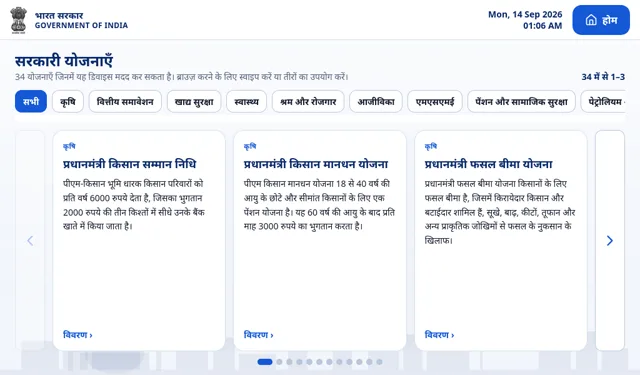<figcaption>The schemes page, shown here in Hindi. In English and Tamil it looks the same, with the words in that language.</figcaption></figure>

<h2 id="s8">8 · Filling a government form with the camera</h2>
<p>The kiosk can fill some printed government forms with you. It reads which form you are holding, asks you the form’s questions aloud one by one, and sends your answers to the office computer for the officer. The officer fills in anything that was skipped.</p>
<p><strong>Bring:</strong> the printed form. Some forms also ask to see your Aadhaar card, bank passbook, voter card, ration card, PAN card or birth certificate.</p>
<h3>Forms the kiosk can fill</h3>
<p>All eight forms can be filled in Tamil, Hindi or English.</p>
<div class="tbl"><table><thead><tr><th>English</th><th>हिन्दी</th><th>தமிழ்</th></tr></thead><tbody>
<tr><td>PM Suraksha Bima Yojana consent form</td><td lang="hi">प्रधानमंत्री सुरक्षा बीमा योजना सहमति फ़ॉर्म</td><td lang="ta">பிரதம மந்திரி சுரக்ஷா பீமா யோஜனா ஒப்புதல் படிவம்</td></tr>
<tr><td>PM Jeevan Jyoti Bima Yojana consent form</td><td lang="hi">प्रधानमंत्री जीवन ज्योति बीमा योजना सहमति फ़ॉर्म</td><td lang="ta">பிரதம மந்திரி ஜீவன் ஜோதி பீமா யோஜனா ஒப்புதல் படிவம்</td></tr>
<tr><td>Atal Pension Yojana subscriber registration form</td><td lang="hi">अटल पेंशन योजना अभिदाता पंजीकरण फ़ॉर्म</td><td lang="ta">அடல் ஓய்வூதிய திட்டம் சந்தாதாரர் பதிவுப் படிவம்</td></tr>
<tr><td>PM Ujjwala Yojana KYC application form</td><td lang="hi">प्रधानमंत्री उज्ज्वला योजना केवाईसी आवेदन फ़ॉर्म</td><td lang="ta">பிரதம மந்திரி உஜ்ஜ்வலா யோஜனா கேஒய்சி விண்ணப்பப் படிவம்</td></tr>
<tr><td>PM SVANidhi loan application form</td><td lang="hi">पीएम स्वनिधि ऋण आवेदन फ़ॉर्म</td><td lang="ta">பிஎம் ஸ்வநிதி கடன் விண்ணப்பப் படிவம்</td></tr>
<tr><td>PM-KISAN self declaration form</td><td lang="hi">पीएम-किसान स्व-घोषणा फ़ॉर्म</td><td lang="ta">பிஎம்-கிசான் சுய அறிவிப்புப் படிவம்</td></tr>
<tr><td>MGNREGA application for registration (job card)</td><td lang="hi">मनरेगा पंजीकरण आवेदन (जॉब कार्ड)</td><td lang="ta">எம்ஜிஎன்ஆர்இஜிஏ பதிவு விண்ணப்பம் (வேலை அட்டை)</td></tr>
<tr><td>Sukanya Samriddhi Account opening form (SSA-1)</td><td lang="hi">सुकन्या समृद्धि खाता खोलने का फ़ॉर्म (एसएसए-1)</td><td lang="ta">சுகன்யா சம்ரிதி கணக்கு தொடங்கும் படிவம் (எஸ்எஸ்ஏ-1)</td></tr>
</tbody></table></div>

<h3>Step by step</h3>
<ol class="steps">
<li><div><p><strong>Start.</strong> On the menu, touch <span class="ui">Scan a Document</span>. The page shows the camera picture with <span class="ui">Camera live</span> and <span class="ui">Place the document inside the frame</span>.</p></div></li>
<li><div><p><strong>Show the form.</strong> Hold the printed form flat, with its title at the top inside the frame, close to the camera and still. Press the round camera button at the bottom. (<span class="ui">Cancel</span> takes you back to the language page.)</p></div></li>
<li><div><p><strong>Wait.</strong> The screen shows <span class="ui">Reading the form…</span>. This takes a few seconds.</p></div></li>
<li><div><p><strong>Say whether it is the right form.</strong> The kiosk says which form it thinks it is, for example: <q>I think this is the PM Suraksha Bima Yojana form. Is that right? Please say yes or no.</q> Press the green <span class="ui">Yes</span> or the <span class="ui">No</span> button. You can also tap <span class="ui">Tap to speak</span>, say yes or no, and tap <span class="ui">Tap to stop</span>.</p>
<ul>
<li>If you say no, the kiosk asks which scheme the form is for. Say the scheme’s name. If it cannot fill that form, it says so and names the forms it can fill.</li>
<li>If it could not read the paper, it says: <q>I could not read the form. Please hold it flat and close to the camera, or tell me which scheme it is for.</q> You can say the scheme’s name.</li>
<li>If it gets no clear yes or no two times, it goes back to the camera page. Press the round camera button again.</li>
</ul></div></li>
<li><div><p><strong>Answer the questions one by one.</strong> The kiosk first says: <q>I will now ask the questions on this form one by one. After each question, tap the button, say your answer, then tap again to stop. Each answer is saved as soon as you give it.</q></p>
<p>For each question: listen (the question is also written in large letters), tap <span class="ui">Tap to speak</span> (the button turns green and says <span class="ui">Tap to stop</span>), say your answer, then tap <span class="ui">Tap to stop</span>. The top of the page shows the form’s name and, for example, <span class="ui">Question 8 of 22</span>. You do not have to wait until the kiosk stops talking: tap <span class="ui">Tap to speak</span>, or <span class="ui">Yes</span> or <span class="ui">No</span>, and it stops at once.</p></div></li>
<li><div><p><strong>Check numbers and dates.</strong> For numbers, dates and amounts, such as your mobile number or date of birth, the kiosk reads your answer back: <q>You said 98 76 54 32 10. Is that correct? Say yes or no.</q> The page shows <span class="ui">You said</span> and the value. Press <span class="ui">Yes</span> to keep it, or <span class="ui">No</span> to answer again.</p></div></li>
<li><div><p><strong>Show a document when you are asked.</strong> When the big button says <span class="ui">Press to capture</span>, the kiosk wants a photo of a document, not your voice. The screen says <span class="ui">Show the document to the camera, then press the button</span>. Hold the document in front of the camera, flat and still, where you held the form, and press <span class="ui">Press to capture</span>. The camera picture is not shown on the screen during the questions. When the kiosk reads a number, it asks: <q>I read … from the document. Is that correct? Say yes or no.</q></p>
<ul>
<li><strong>Aadhaar card:</strong> <q>Please show your Aadhaar card, or a copy of it, to the camera.</q> If the number cannot be read, the kiosk asks you to say the twelve digits.</li>
<li><strong>Bank account number:</strong> the kiosk says <q>Please say your bank account number slowly, digit by digit</q>, but the button still says <span class="ui">Press to capture</span>. Show the first page of your bank passbook and press the button. If the kiosk cannot read the number, it then asks you to say it.</li>
<li><strong>IFSC code:</strong> show the page of your passbook with the IFSC code. If it cannot be read, the officer fills it in.</li>
<li><strong>PAN card:</strong> the kiosk can read the PAN number from the card.</li>
<li><strong>Voter card, ration card, birth certificate:</strong> the kiosk asks to see them, then says <q>I could not read it from the document; the officer will fill it in.</q> That is how the kiosk works today; nothing is wrong with your card.</li>
<li>If you do not have the document, press <span class="ui">Skip</span> (see the buttons below).</li>
</ul></div></li>
<li><div><p><strong>Listen to all your answers.</strong> After the last question the kiosk says <q>I will now read back your answers.</q> It reads each answer with a number, and the page lists them under <span class="ui">Your answers</span>. Then it asks: <q>Is everything correct? Say yes, or press the Yes button, to send it to the office; or say change.</q></p>
<ul>
<li><span class="ui">Yes, send it</span> sends the form.</li>
<li><span class="ui">Change</span>: the kiosk asks <q>Which answer do you want to change? Say its number.</q> Tap <span class="ui">Tap to speak</span> and say the number; there is no button for the number. The kiosk then asks that question again, and also every question after it, and reads all your answers back again. If you notice a mistake straight after answering a question, pressing <span class="ui">Change</span> at that moment is much quicker.</li>
<li>If it hears no clear yes three times, it finishes: <q>I could not hear a yes. Your answers have already been saved for the officer, who will check them with you. Thank you.</q></li>
</ul></div></li>
<li><div><p><strong>The end.</strong> The kiosk says <q>Sending your form to the office computer.</q> and then <q>Your form has been sent. Thank you.</q> The page shows <span class="ui">Thank You!</span> and <span class="ui">Stay informed. Stay empowered.</span></p>
<p>If the office computer cannot be reached, you hear <q>The office computer is not reachable right now. Your form is saved safely and will be sent automatically.</q> and the page says <span class="ui">Saved safely - it will be sent when the office computer is reachable.</span></p>
<p>Press <span class="ui">Home</span> when you are done.</p></div></li>
</ol>
<figure>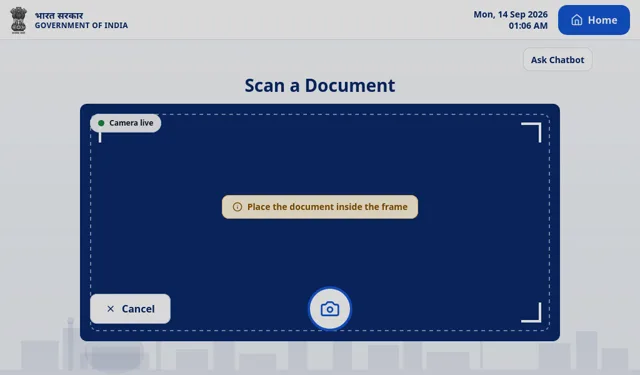<figcaption>The scan page. Hold the form inside the frame and press the round camera button. The small <span class="ui">Ask Chatbot</span> button is something else (see the end of this section).</figcaption></figure>
<div class="pair">
<figure>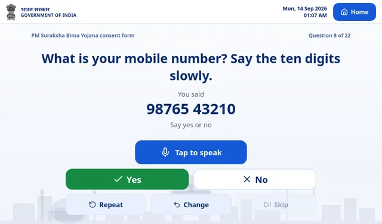<figcaption>A form question with its read-back. The green <span class="ui">Yes</span> and the <span class="ui">No</span> button answer it by touch.</figcaption></figure>
<figure>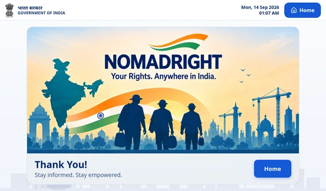<figcaption>After the form is sent. Press <span class="ui">Home</span> when you are done.</figcaption></figure>
</div>

<h3>The buttons during a form</h3>
<div class="tbl"><table><thead><tr><th>English</th><th>हिन्दी</th><th>தமிழ்</th><th>What it does</th></tr></thead><tbody>
<tr><td><span class="ui">Tap to speak</span> / <span class="ui">Tap to stop</span></td><td lang="hi">बोलने के लिए दबाएँ / रोकने के लिए दबाएँ</td><td lang="ta">பேச தட்டவும் / நிறுத்த தட்டவும்</td><td>Starts and stops your spoken answer.</td></tr>
<tr><td><span class="ui">Press to capture</span></td><td lang="hi">फ़ोटो लेने के लिए दबाएँ</td><td lang="ta">படம் எடுக்க அழுத்துங்கள்</td><td>Takes the photo of the document you are showing.</td></tr>
<tr><td><span class="ui">Yes</span> / <span class="ui">No</span></td><td lang="hi">हाँ / नहीं</td><td lang="ta">ஆம் / இல்லை</td><td>Answers a yes-or-no question by touch. They work even when the kiosk does not hear you.</td></tr>
<tr><td><span class="ui">Yes, send it</span> / <span class="ui">Change</span></td><td lang="hi">हाँ, भेजें / बदलें</td><td lang="ta">ஆம், அனுப்பு / மாற்று</td><td>On the final read-back: send the form, or change an answer.</td></tr>
<tr><td><span class="ui">Repeat</span></td><td lang="hi">फिर से</td><td lang="ta">மீண்டும்</td><td>Says the question again. During <q>You said …</q> it reads the value out again.</td></tr>
<tr><td><span class="ui">Change</span></td><td lang="hi">बदलें</td><td lang="ta">மாற்று</td><td>Goes back to the answer you gave just before, so you can give it again. It goes back one question only; pressing it again asks that same question again. During <q>You said …</q> it asks the question again.</td></tr>
<tr><td><span class="ui">Skip</span></td><td lang="hi">छोड़ें</td><td lang="ta">தவிர்</td><td>Leaves the question. If the question may stay empty (the kiosk says <q>If you do not know, say skip.</q>), it moves on at once. If the form needs the answer, the kiosk asks again; after it has asked three more times, <span class="ui">Skip</span> leaves the question for the officer. <span class="ui">Skip</span> is greyed out during yes-or-no questions.</td></tr>
<tr><td><span class="ui">Home</span></td><td lang="hi">होम</td><td lang="ta">முகப்பு</td><td>Ends the form. See “Stopping in the middle” below.</td></tr>
</tbody></table></div>
<p>While the kiosk is listening, the other buttons are greyed out. Tap <span class="ui">Tap to stop</span> first.</p>

<h3>Saying the words instead of pressing</h3>
<p>You can also say these words as your answer:</p>
<div class="tbl"><table><thead><tr><th>Does the same as</th><th>English</th><th>हिन्दी</th><th>தமிழ்</th></tr></thead><tbody>
<tr><td><span class="ui">Yes</span></td><td>yes, okay, correct</td><td lang="hi">हाँ, जी, ठीक है, सही</td><td lang="ta">ஆம், ஆமாம், சரி</td></tr>
<tr><td><span class="ui">No</span></td><td>no, wrong</td><td lang="hi">नहीं, ना, गलत</td><td lang="ta">இல்லை, இல்ல, தவறு</td></tr>
<tr><td><span class="ui">Repeat</span></td><td>repeat, again</td><td lang="hi">दोबारा, फिर से</td><td lang="ta">மீண்டும், திரும்ப, மறுபடியும்</td></tr>
<tr><td><span class="ui">Change</span></td><td>change, back, go back</td><td lang="hi">बदलो, पीछे, वापस</td><td lang="ta">மாற்று, பின்னால், திருத்து</td></tr>
<tr><td><span class="ui">Skip</span></td><td>skip, next, don’t know</td><td lang="hi">छोड़ो, अगला, पता नहीं</td><td lang="ta">தவிர், அடுத்தது, தெரியாது</td></tr>
<tr><td>Stop the form</td><td>cancel, stop</td><td lang="hi">रद्द, बंद करो, रोको</td><td lang="ta">ரத்து, நிறுத்து</td></tr>
</tbody></table></div>
<div class="note warn"><strong>These words also count inside a longer answer.</strong> An address with “behind the temple” (<span lang="hi">मंदिर के पीछे</span>, <span lang="ta">கோவில் பின்னால்</span>) makes the kiosk go back one question, “next to” makes it skip, and “bus stop” or <span lang="hi">बंद</span> stops the form. Say it another way, for example “near the temple” (<span lang="hi">मंदिर के पास</span>, <span lang="ta">கோவில் அருகில்</span>). If the kiosk went back, answer the earlier question again, then give your answer.</div>

<h3>Your answers are saved as you go</h3>
<p>Every answer, and every question you skip, is saved for the officer as soon as you give it. If you stop half-way, the answers you already gave are not lost.</p>

<h3>Stopping in the middle</h3>
<ul>
<li><strong>Home:</strong> the form ends at once and you go to the language page. The answers you gave so far are already with the officer, marked as stopped. The kiosk forgets them.</li>
<li><strong>Saying “cancel” or “stop”:</strong> you hear <q>Form filling stopped. The answers you gave so far have been saved for the officer.</q> If you had not answered anything yet: <q>Form filling cancelled.</q></li>
<li><strong>Walking away:</strong> if nobody taps the button for 5 minutes after a question, the form ends by itself. The answers so far are saved for the officer, the kiosk forgets them, and the scan page comes back.</li>
<li><strong>To carry on</strong> after a form has stopped, show the form to the camera again. The questions start again from the beginning.</li>
</ul>

<h3>The small “Ask Chatbot” button</h3>
<p><span class="ui">Ask Chatbot</span>, at the top right of the scan page, does something different. It takes a photo of whatever paper is in front of the camera straight away, and you can ask one question about that photo, by voice (<span class="ui">Tap to ask</span>) or by typing in English letters. Ask within about a minute and a half. For another question about a paper, press <span class="ui">New document</span> and take the photo again. It does not fill forms.</p>

<h2 id="s9">9 · Home</h2>
<p>The Home button (<span class="ui">Home</span> · <span class="ui" lang="hi">होम</span> · <span class="ui" lang="ta">முகப்பு</span>) is at the top right of every page after the language page. The answer page and the thank-you page also have one lower down.</p>
<p><strong>Home ends your visit.</strong> It:</p>
<ul>
<li>stops the kiosk if it is talking,</li>
<li>clears your question and the answer from the screen,</li>
<li>deletes the recording of the answer, so <span class="ui">Listen again</span> is gone,</li>
<li>forgets the scheme you were talking about,</li>
<li>ends a form you were filling (the answers you gave are already saved for the officer),</li>
<li>takes you back to the language page.</li>
</ul>
<p><strong>Press Home when you are done, before you leave</strong>, so the next person starts fresh. If you walk away without it, your last answer stays on the screen, and the kiosk still remembers your conversation when the next person asks a question. Press Home also to change the language, or to go to another part of the kiosk.</p>
<p><span class="ui">Back</span> on the menu does the same as Home.</p>

<h2 id="s10">10 · The Help page on the kiosk</h2>
<p>On the menu, touch <span class="ui">Help</span>. It shows eight steps, one at a time, each with a picture of the real screen in your language and a few sentences. The top right says <span class="ui">Step 1 of 8</span>. <span class="ui">Next</span> and <span class="ui">Previous</span> move between the steps. <span class="ui">Back</span> returns to the menu, and your visit continues.</p>
<div class="tbl"><table><thead><tr><th class="n">Step</th><th>English</th><th>हिन्दी</th><th>தமிழ்</th></tr></thead><tbody>
<tr><td class="n">1</td><td>Choose your language</td><td lang="hi">अपनी भाषा चुनें</td><td lang="ta">உங்கள் மொழியைத் தேர்ந்தெடுங்கள்</td></tr>
<tr><td class="n">2</td><td>Choose what you need</td><td lang="hi">आपको क्या चाहिए, चुनें</td><td lang="ta">உங்களுக்கு என்ன வேண்டும் என்பதைத் தேர்ந்தெடுங்கள்</td></tr>
<tr><td class="n">3</td><td>Ask your question</td><td lang="hi">अपना सवाल पूछें</td><td lang="ta">உங்கள் கேள்வியைக் கேளுங்கள்</td></tr>
<tr><td class="n">4</td><td>Listen to the answer</td><td lang="hi">जवाब सुनें</td><td lang="ta">பதிலைக் கேளுங்கள்</td></tr>
<tr><td class="n">5</td><td>See all schemes</td><td lang="hi">सभी योजनाएँ देखें</td><td lang="ta">எல்லா திட்டங்களையும் பாருங்கள்</td></tr>
<tr><td class="n">6</td><td>Scan a form</td><td lang="hi">फ़ॉर्म स्कैन करें</td><td lang="ta">படிவத்தை ஸ்கேன் செய்யுங்கள்</td></tr>
<tr><td class="n">7</td><td>Answer the questions</td><td lang="hi">सवालों के जवाब दें</td><td lang="ta">கேள்விகளுக்குப் பதில் சொல்லுங்கள்</td></tr>
<tr><td class="n">8</td><td>Your answers reach the office</td><td lang="hi">आपके जवाब दफ़्तर पहुँचते हैं</td><td lang="ta">உங்கள் பதில்கள் அலுவலகத்திற்குச் சென்றடையும்</td></tr>
</tbody></table></div>

<h2 id="s11">11 · If something goes wrong</h2>
<div class="tbl"><table><thead><tr><th>What happens</th><th>What to do</th></tr></thead><tbody>
<tr><td><strong>The kiosk did not hear me.</strong> A red box says <span class="ui">Could not hear you. Please try again.</span></td><td>Tap the microphone and wait until <span class="ui">Listening...</span> appears. Then speak, and press <span class="ui">Stop &amp; Process</span> after your last word. Stand close and face the kiosk. The red box closes by itself, so you do not need to press anything in it; its <span class="ui">Retry</span> and <span class="ui">Home</span> buttons also clear your conversation.</td></tr>
<tr><td><strong>It says <q>I am sorry, I do not have information about that.</q></strong></td><td>It had no answer, or did not catch the scheme’s name. Ask again in other words, or say the name of the scheme. It only answers about government schemes and about itself. You can also find the scheme under <span class="ui">View All Schemes</span>.</td></tr>
<tr><td><strong>It answered about a different scheme.</strong></td><td>Ask again and say the scheme’s name, a little differently if needed, for example “Ayushman card” or “Ayushman Bharat”. After a question about one scheme, the kiosk takes a new question without a name to be about the same scheme, so name the new one. Or press Home and start again.</td></tr>
<tr><td><strong>It keeps asking me something back</strong>, such as <q>Which card do you mean…</q> or <q>What work do you do?</q></td><td>It needs one more detail to find the right scheme. Answer the question it asked, or ask a full question that names the scheme.</td></tr>
<tr><td><strong>The end of my question was lost.</strong></td><td>The kiosk uses only the first 15 seconds. Ask a shorter question, one question at a time.</td></tr>
<tr><td><strong>The form keeps asking the same question.</strong></td><td>It did not understand the answer, for example a number with a digit missing. Say numbers digit by digit. For yes or no, press the green <span class="ui">Yes</span> or the <span class="ui">No</span> button. If you cannot answer, press <span class="ui">Skip</span>; after the kiosk has asked three more times, the question is left for the officer.</td></tr>
<tr><td><strong>The form went back a question, or moved on, by itself.</strong></td><td>A word in your answer does the same as a button (see “Saying the words instead of pressing” in <a href="#s8">section 8</a>), or the kiosk heard nothing for a question that may stay empty. Answer the question it asks now. To go back to a question it moved past, press <span class="ui">Change</span> straight away.</td></tr>
<tr><td><strong>The form stopped.</strong></td><td>Home was pressed, a word such as “cancel” or “stop” was heard (<span lang="hi">रद्द, बंद, रोको</span> · <span lang="ta">ரத்து, நிறுத்து</span>), or nobody answered for 5 minutes. The answers you gave are saved for the officer. Show the form to the camera again to start again, or talk to the officer.</td></tr>
<tr><td><strong>The kiosk does not know my form.</strong> It says <q>Sorry, I cannot fill this form yet. I can help with these forms: …</q></td><td>Check that your form is one of the eight in <a href="#s8">section 8</a>. Hold it so that its title is inside the frame, flat and close, and press the camera button again.</td></tr>
<tr><td><strong>The screen says <span class="ui">The device is reconnecting. Please wait a moment.</span></strong></td><td>Wait. It usually comes back by itself. If the kiosk starts again and shows <span class="ui">All systems ready to go!</span>, press <span class="ui">Continue</span> and choose your language again. If nothing changes for a few minutes, ask a staff member.</td></tr>
<tr><td><strong>Nothing happens when I tap.</strong></td><td>The kiosk may still be busy, for example <span class="ui">Reading the form…</span>, <span class="ui">Finding Your Answer</span>, or talking. Wait for it. Greyed-out buttons do not work at that moment: during a form, tap <span class="ui">Tap to stop</span> first; <span class="ui">Skip</span> is off during yes-or-no questions. Tap once, firmly. If a box says <span class="ui">A task is in progress</span>, choose <span class="ui">Continue task</span> to stay or <span class="ui">Cancel and leave</span>. If the screen still does not react, ask a staff member.</td></tr>
<tr><td><strong><span class="ui">Listen again</span> is missing.</strong></td><td>It only appears after an answer has been spoken to the end. Ask the question again.</td></tr>
</tbody></table></div>

<h2 id="s12">12 · Quick cards</h2>
<p>Two short cards with the six most important steps, one in Hindi and one in Tamil, to print or to keep next to the kiosk. The button names in quotes are copied from the kiosk screen.</p>
<div class="note warn"><strong>Needs native speaker review.</strong> The Hindi and Tamil sentences on these cards were written for this guide. A native speaker must check them before they are printed or shown to the public.</div>

<section class="card" lang="hi">
<h3>NomadRight कियोस्क: छह आसान कदम <span class="chip warn" lang="en">needs native speaker review</span></h3>
<ol class="steps">
<li><div><p><strong>भाषा चुनिए।</strong> पहली स्क्रीन पर “हिन्दी” छुइए। इसके बाद कियोस्क हिंदी में सुनेगा, बोलेगा और लिखेगा।</p></div></li>
<li><div><p><strong>सवाल पूछिए।</strong> “अपना सवाल बोलिए” छुइए, फिर नीला माइक्रोफ़ोन दबाइए। अपने शब्दों में, आराम से बोलिए। एक बार में एक सवाल।</p></div></li>
<li><div><p><strong>बोलकर बटन दबाइए।</strong> बात पूरी होने पर लाल बटन “रोकें और प्रोसेस करें” दबाइए। थोड़ा इंतज़ार कीजिए। कियोस्क जवाब बोलेगा और बड़े अक्षरों में दिखाएगा।</p></div></li>
<li><div><p><strong>दोबारा सुनिए या अगला सवाल पूछिए।</strong> “फिर से सुनें” से वही जवाब फिर सुनिए। “अपना सवाल पूछिए” से अगला सवाल पूछिए; योजना का नाम दोबारा बोलना ज़रूरी नहीं। कियोस्क न समझे तो वह बता देगा, आप फिर से पूछ सकते हैं।</p></div></li>
<li><div><p><strong>फ़ॉर्म भरिए।</strong> “दस्तावेज़ स्कैन करें” छुइए। छपा हुआ फ़ॉर्म कैमरे के सामने सीधा रखिए और गोल कैमरा बटन दबाइए। हर सवाल पर “बोलने के लिए दबाएँ” दबाकर जवाब बोलिए, फिर “रोकने के लिए दबाएँ” दबाइए। हाँ या नहीं के लिए हरा “हाँ” बटन या “नहीं” बटन दबाइए। हर जवाब उसी समय अधिकारी के लिए सुरक्षित हो जाता है।</p></div></li>
<li><div><p><strong>आख़िर में “होम” दबाइए।</strong> इससे आपकी बातचीत मिट जाती है और अगला व्यक्ति नए सिरे से शुरू करता है।</p></div></li>
</ol>
<div class="thumbs">
<figure><figcaption>पहली स्क्रीन: भाषा चुनिए।</figcaption></figure>
<figure>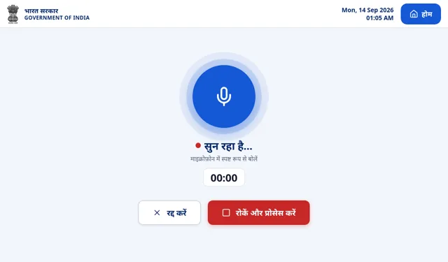<figcaption>कियोस्क सुन रहा है। बोलने के बाद “रोकें और प्रोसेस करें” दबाइए।</figcaption></figure>
<figure>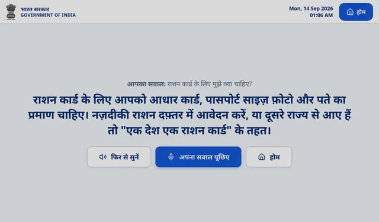<figcaption>जवाब, “फिर से सुनें” और “अपना सवाल पूछिए” के साथ।</figcaption></figure>
<figure>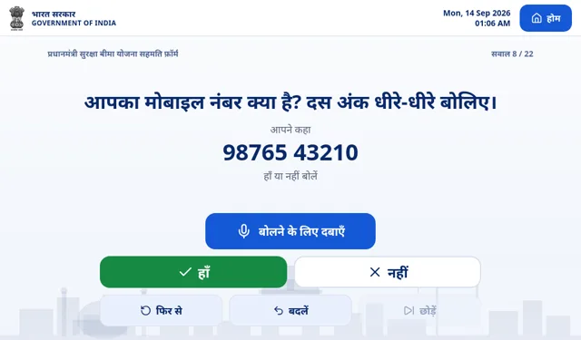<figcaption>फ़ॉर्म का सवाल: हरा “हाँ” या “नहीं” दबाइए।</figcaption></figure>
</div>
</section>

<section class="card" lang="ta">
<h3>NomadRight கியோஸ்க்: ஆறு எளிய படிகள் <span class="chip warn" lang="en">needs native speaker review</span></h3>
<ol class="steps">
<li><div><p><strong>மொழியைத் தேர்ந்தெடுங்கள்.</strong> முதல் திரையில் “தமிழ்” தொடுங்கள். அதன் பிறகு கியோஸ்க் தமிழில் கேட்கும், பேசும், எழுதிக் காட்டும்.</p></div></li>
<li><div><p><strong>கேள்வி கேளுங்கள்.</strong> “உங்கள் கேள்வியைச் சொல்லுங்கள்” தொடுங்கள், பிறகு நீல மைக்ரோஃபோனைத் தட்டுங்கள். உங்கள் சொந்த வார்த்தைகளில், இயல்பாகப் பேசுங்கள். ஒரு நேரத்தில் ஒரு கேள்வி.</p></div></li>
<li><div><p><strong>பேசி முடித்ததும் பொத்தானை அழுத்துங்கள்.</strong> சிவப்பு “நிறுத்தி செயலாக்கு” பொத்தானை அழுத்துங்கள். சிறிது காத்திருங்கள். கியோஸ்க் பதிலைச் சொல்லி, பெரிய எழுத்தில் காட்டும்.</p></div></li>
<li><div><p><strong>மீண்டும் கேளுங்கள், அல்லது அடுத்த கேள்வி கேளுங்கள்.</strong> “மீண்டும் கேட்க” அழுத்தினால் அதே பதிலை மறுபடி கேட்கலாம். “உங்கள் கேள்விகளைக் கேளுங்கள்” அழுத்தி அடுத்த கேள்வியைக் கேளுங்கள்; திட்டத்தின் பெயரை மீண்டும் சொல்ல வேண்டியதில்லை. கியோஸ்க்கிற்குப் புரியாவிட்டால் அது சொல்லும்; நீங்கள் மீண்டும் கேட்கலாம்.</p></div></li>
<li><div><p><strong>படிவம் நிரப்புங்கள்.</strong> “ஆவணத்தை ஸ்கேன் செய்யவும்” தொடுங்கள். அச்சிட்ட படிவத்தை கேமரா முன் நேராகப் பிடித்து, வட்ட கேமரா பொத்தானை அழுத்துங்கள். ஒவ்வொரு கேள்விக்கும் “பேச தட்டவும்” தட்டிப் பதில் சொல்லுங்கள், பிறகு “நிறுத்த தட்டவும்” தட்டுங்கள். ஆம் அல்லது இல்லை கேள்விக்கு பச்சை “ஆம்” பொத்தான் அல்லது “இல்லை” பொத்தானை அழுத்துங்கள். ஒவ்வொரு பதிலும் அப்போதே அதிகாரிக்காகச் சேமிக்கப்படும்.</p></div></li>
<li><div><p><strong>முடிந்ததும் “முகப்பு” அழுத்துங்கள்.</strong> உங்கள் உரையாடல் அழிக்கப்படும்; அடுத்தவர் புதிதாகத் தொடங்குவார்.</p></div></li>
</ol>
<div class="thumbs">
<figure><figcaption>முதல் திரை: மொழியைத் தேர்ந்தெடுங்கள்.</figcaption></figure>
<figure>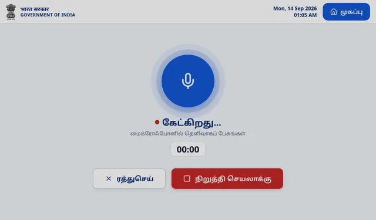<figcaption>கியோஸ்க் கேட்கிறது. பேசிய பிறகு “நிறுத்தி செயலாக்கு” அழுத்துங்கள்.</figcaption></figure>
<figure>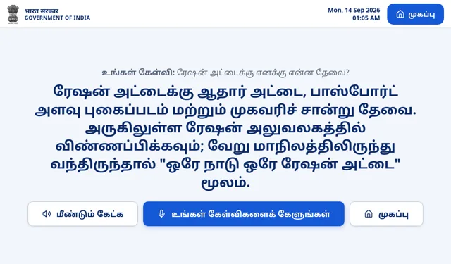<figcaption>பதில், “மீண்டும் கேட்க” மற்றும் “உங்கள் கேள்விகளைக் கேளுங்கள்” பொத்தான்களுடன்.</figcaption></figure>
<figure>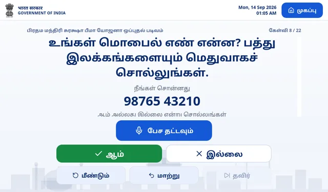<figcaption>படிவக் கேள்வி: பச்சை “ஆம்” அல்லது “இல்லை” அழுத்துங்கள்.</figcaption></figure>
</div>
</section>

<footer>Written on 14 September 2026 from the kiosk as installed that day (NOMADRIGHT 4d5672b, screen b89aab1). Screens are pictures from the kiosk’s own Help page. Companion documents: <em>NomadRight General Questions</em> (the full list of questions) and <em>NomadRight Operator Guide</em> (for staff and technicians).</footer>
</main>
